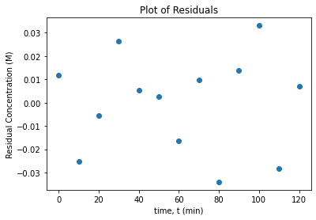
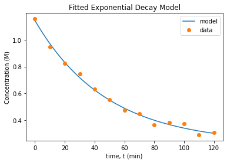

Nonlinear Regression Practice Problem
Contents
Nonlinear Regression Practice Problem¶
CBE 20258. Numerical and Statistical Analysis. Spring 2020.
© University of Notre Dame
# load libraries
import scipy.stats as stats
import numpy as np
import scipy.optimize as optimize
import math
import matplotlib.pyplot as plt
Learning Objectives¶
After studying this notebook, attending class, asking questions, and reviewing your notes, you should be able to:
Develop transformations for some nonlinear models and apply linear regression
Perform residual analysis for linear and nonlinear regression (as diagnostic plots for both)
Calculate standard errors (i.e., standard deviation) of the residuals
Assemble the covariance matrix for linear regression using normal equations (i.e., feature matrix \(\mathbf{X}\))
Calculate nonlinear regression best fit using Python
Assemble the covariance matrix for nonlinear regression
Nonlinear Regression Practice Problem¶
For this question, you will use nonlinear regression to analyze the kinetics of an indicator in a strong base.
Background¶
Phenolphthalein is a base indicator (it turns a pretty purple), but in the presence of a strong base, it will fade over time. This is a reversible reaction: pseudo first order in the forward (fading) direction (it is actually second order, but there is so much \([OH^-]\) that it can be simplified as pseudo first order) and first order in the reverse direction. The rate expression is:
where \(k_{1}' = k_{1} \cdot [OH^-]\) is the pseudo first order rate. \([POH]\) is only produced from this reaction, thus we have the mass balance:
With the initial conditions:
We can solve these equations to get the solution:
We seek best fit values for parameters
However, this problem is poorly scaled with respect to \(k\). Instead, we will transform it to obtain:
where \(\lambda=k_{1}'+k_{2}\). These two rate constants can be calculated from the ratio of the initial and equilibrium concentrations and the exponential decay rate.
Consider an experiment where students introduce a dilute amount of phenolphthalein into a 0.1M NaOH solution. Using a colorimeter, students measure the following absorbances as a function of time:
Time (min) |
Absorbance |
|---|---|
0 |
1.1546 |
10 |
0.9456 |
20 |
0.8257 |
30 |
0.7442 |
40 |
0.6310 |
50 |
0.5536 |
60 |
0.4738 |
70 |
0.4507 |
80 |
0.3671 |
90 |
0.3826 |
100 |
0.3574 |
110 |
0.2926 |
120 |
0.3105 |
Because the solution is so dilute, the absorbance obeys Beer’s Law; thus the absorbance is proportional to the concentration.
Transform Model Parameters¶
On paper, derive expressions for:
\(k_{1}'\),
\(k_{2}\),
and \(k_{eq}\)
in terms of \(P_0, P_{eq}, \lambda\).
Show your work. Hint: \(k_{eq} = k'_1 / k_2\).
Perform Nonlinear Regression¶
Compute the best fit values for parameters \(x = [~ [P]_0, [P]_{eq}, \lambda ~]^T\) using the experimental data. Call your solution vector x_sol and store your answers in variables P0, Peq, and l.
# time and concentration data
data = np.array([[0, 1.1546],
[10, 0.9456],
[20, 0.8257],
[30, 0.7442],
[40, 0.631],
[50, 0.5536],
[60, 0.4738],
[70, 0.4507],
[80, 0.3671],
[90, 0.3826],
[100, 0.3754],
[110, 0.2926],
[120, 0.3105]])
t = data[:,0] # the times, min
p = data[:,1] # the concentrations, M
n = len(t) # number of data points
# define functions to evaluation model and residuals.
def model_func(x, t):
'''
Function to define model being fitted
Arguments:
x: parameter vector
t: time vector
Returns:
model: matrix of equations
'''
# Add your solution here
return model
def regression_func(x, t, p):
'''
Function to define regression function for least-squares fitting
Arguments:
x: parameter vector
t: time vector
p: concentrations vector
Returns:
r: residuals
'''
# Add your solution here
return r
#Find parameters (remember to save in x_sol)
# Add your solution here
1.1428633173643805 0.2285933821677709 0.020845031052624387
Plot Residuals and Fitted Model¶
A critical assumption in regression analysis is that the model errors are independent and identically distributed. Do the following to check this assumption:
Calculate the residuals. Save the answer in the variable
res.Plot the residuals vs. time
Plot concentration prediction (from your model) vs. time. On the same graph, plot the experimental data.
Write at least two sentences to interpret the plots.
# Add your solution here


Covariance Matrix¶
We can quickly estimate the covariance matrix:
where \(\hat{\sigma}^2_r\) is the variance of the residuals and \(J\) is the Jacobian of the residuals with respect to the model parameters \(x\).
Do the following on paper:
Assemble the gradient vectors \(\nabla_{x} k_{1}'\), \(\nabla_{x} k_{2}\), and \(\nabla_{x} k_{eq}\).
Write the formula to calculate the covariance matrix \(\Sigma_{k}\). Hint: look at your notes for multivariate error propagation.
Write the equations to calculate \(\sigma_{K_{eq}}\) and its 95% confidence interval. Leave your answers in symbolic form.
Finally, implement the calculations (above steps) in Python. You will need to start by calculating \(\Sigma_x\). Report the standard deviation of the equilibrium constant and the 95% confidence interval with the units and a reasonable number of significant digits.
# Add your solution here
Variance of residuals = 0.0005 M^2
Covariance matrix of x =
[[3.68684559e-04 2.24826268e-04 2.02814257e-05]
[2.24826268e-04 7.98877392e-04 4.56687950e-05]
[2.02814257e-05 4.56687950e-05 3.04396715e-06]]
Jacobian of k =
[[ 3.64819138e-03 -1.82393036e-02 7.99981871e-01]
[-3.64819138e-03 1.82393036e-02 2.00018129e-01]
[ 4.37457983e+00 -2.18709167e+01 0.00000000e+00]]
Covariance matrix of k =
[[ 9.74466946e-07 7.01675092e-07 -4.39373152e-04]
[ 7.01675092e-07 6.66150016e-07 -4.70722543e-04]
[-4.39373152e-04 -4.70722543e-04 3.46167123e-01]]
Standard deviation of keq = 0.5884
t = [-2.22813885 2.22813885]
95% confidence interval for Keq: [2.6886, 5.3105]
Final Thoughts¶
Residuals look much better with nonlinear regression
Covariance matrix is much more reasonable
Nonlinear regression is not that expensive or difficult, especially with Python and modern optimization algorithms